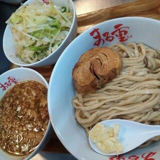

広告（PR）｜ふるさと納税

大分県のラーメン店を市区別に、全10エリア・100店から厳選しました。各エリアの1位には、大分市「まる重」（★4.1）、別府市「別府担々麺 一膳」（★4.7）、日田市「みくま飯店」（★4.2）などが並びます。気になるエリアのページから、おすすめ順のランキングをご覧ください。
おうちでラーメンを楽しむ【PR】
宅麺.com｜名店のラーメンをお取り寄せ
全国の有名ラーメン店の味を、冷凍のまま自宅へお届けするお取り寄せサービス。お店の味をそのまま楽しめます。
大阪王将 公式通販｜冷凍餃子・中華
餃子・炒飯・点心など、お店の中華料理をご家庭にお届けする公式通販。ラーメンのお供にもおすすめです。
大分市ラーメン10選
1位：まる重（★4.1／1,648件）
別府市ラーメン10選
1位：別府担々麺 一膳（★4.7／294件）
日田市ラーメン10選
1位：みくま飯店（★4.2／1,256件）
佐伯市ラーメン10選
1位：藤原来々軒（★4.2／324件）
中津市ラーメン10選
1位：しゅうちゃんラーメン（★4.1／616件）
宇佐市ラーメン10選
1位：ラーメン来々軒・からあげ天下とり（★4.2／497件）
由布市ラーメン10選
1位：ラーメン 侍（★4.3／1,258件）
国東半島エリア（豊後高田市・杵築市・国東市）ラーメン10選
1位：ラーメンショップ山香店（★3.9／551件）
豊後大野・竹田エリアラーメン10選
1位：竹田の中華そば こっとん（★4.2／492件）
臼杵・津久見エリアラーメン10選
1位：幸悦（★4.0／329件）
選定基準｜おすすめ順の決め方
大分県全体の順位は、次の方法で決めています。
- 算出方法：Googleマップの評価（★）を主軸に、口コミ件数と食べログの点数・口コミ数を加味した「おすすめ順」です。評価が高く、口コミの母数が多い店ほど上位になります。
- 実測日：掲載している評価・口コミ件数は、2026年11月3日にGoogleマップ・食べログで確認した実測値です。
- 順位と広告の関係：順位は広告・提携の有無とは一切関係ありません。本ページにはアフィリエイト広告（PR）が含まれますが、店舗の順位には影響しません。
おうちでラーメンを楽しむ【PR】
宅麺.com｜名店のラーメンをお取り寄せ
全国の有名ラーメン店の味を、冷凍のまま自宅へお届けするお取り寄せサービス。お店の味をそのまま楽しめます。
大阪王将 公式通販｜冷凍餃子・中華
餃子・炒飯・点心など、お店の中華料理をご家庭にお届けする公式通販。ラーメンのお供にもおすすめです。